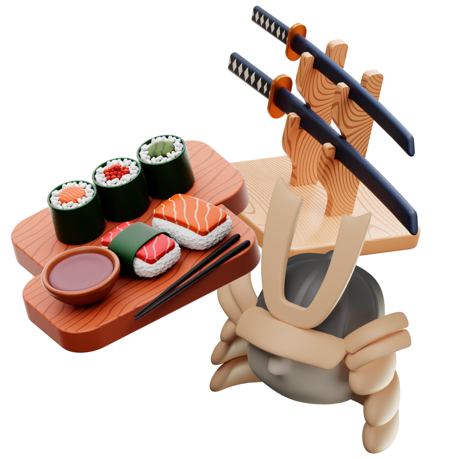

Estudar pode ser divertido! jogue e pratique a lingua japonesa de maneira divertida e fluida!

Apresentação 「 自己紹介 」
はじめまして、あなただけの自習スペースへようこそ。
Olá viajante, seja bem vindo ao seu espaço diferenciado de Nihongo!
Aqui temos como ponto chave estimular o estudo de uma maneira mais
divertida, com jogos, musica e testes para por em pratica tudo o que estudou.
Na twitch costumo realizar lives para estudar junto com telespectadores! seja bem vindo a comunidade!
Estudar com um resumão de qualidade, PDF's explicativos e materiais
ajudam muito a aumentar o nível de interesse, e aqui não é diferente!, na aba
MATERIAL você conta com PDF's e resumos da matéria ao longo do meu estudo de 日本語.
divirta-se!
Aqui contamos com 4 jogos para testar toda seu nivel de entendimento da
língua japonesa, sendo um para audição, outro para memorização de kanjis
N5, hiraganas ou katakanas e outro jogo para entendimento de textos e frases
com e sem kanjis!